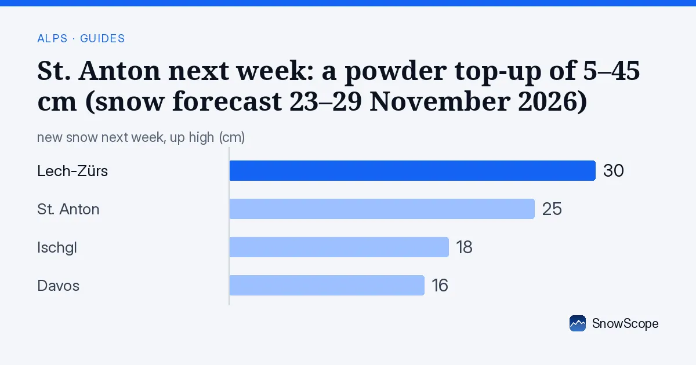

St. Anton next week: a powder top-up of 5–45 cm (snow forecast 23–29 November 2026)
The question for anyone heading to St. Anton next week is simple: how much, and where? Between Monday 23 and Sunday 29 November our forecast puts 25 cm on the upper slopes (5–45 cm), 25 cm around 2000 m and 18 cm at the base, with Sunday 29 November as the snowiest day.
See the live snow forecast for St. Anton in the SnowScope appSnow depth, powder alerts and the 3D map, free.
First, this week's snow
The first instalment comes this week: 24 cm on the upper slopes of St. Anton from 17 to 20 November, 12 cm lower down. Next week adds a second layer on top.

What falls where on the St. Anton slopes
Read from the top down: 25 cm near 2500 m, 25 cm near 2000 m, 18 cm near 1400 m. The low-to-high spread is 5–45 cm at the top and 4–31 cm at the base.
Day by day, the upper mountain picks up most of it on Monday 23 (5 cm, up to 6), Wednesday 25 (3 cm, up to 4), Thursday 26 (6 cm, up to 13) and Sunday 29 (9 cm, up to 17). Outside those days expect little more than flurries.
Snow or rain at the bottom?
Little is lost on the way down: 18 cm around 1400 m against 25 cm up high. On these numbers the precipitation falls as snow almost everywhere in St. Anton.
St. Anton is the steep end of the Arlberg, where off-piste traffic tracks out fresh snow quickly.
How nearby resorts compare
For comparison, the upper slopes of the closest big resorts collect Lech-Zürs (11 km away) 30 cm, Ischgl (19 km away) 18 cm and Davos (43 km away) 16 cm; St. Anton sits at 25 cm.
The differences are small: the storm covers this whole corner of the Alps evenly, so pick on terrain and lifts, not on the snow total.
When and where to ski St. Anton
If you can pick one day, take the one that follows Sunday 29 November, when 9 cm (up to 17 cm) has landed on the upper mountain.
Go high: depth is safest on the Valluga and the Kapall ridge, and the best skiing should be on the shaded Rendl side and the north-facing slopes under the Valluga. Treat the Nasserein end of the village as the weak point.
The range, not just the number
Treat this one with caution: 5 cm at the low end, 45 cm at the high end. A spread that wide a week out means the storm may still slide away from St. Anton or sit right over it.
Storm timing tends to firm up first; totals keep moving until a day or two before.
Tips for skiers
- Fresh snow on a young snowpack: read the regional avalanche service of the province before any off-piste plan.
- Check the resort's own opening date and lift status: snow on the mountain does not mean lifts are running.
- Watch the forecast midweek: the top's range is 5–45 cm.
More maps (external sites)
About these numbers
Snow numbers: our two-week snow forecast issued on 16 November 2026, read at three heights of the resort (top, mid-mountain, base). Each total is the middle of a range, with a low and a high case. These are estimates for the slopes, not resort measurements, and forecasts move from day to day: check the live map before you go.
Cite this report
For research, teaching or the press: the numbers and charts are free to reuse under CC BY 4.0 with this citation.
SnowScope (2026), St. Anton next week: a powder top-up of 5–45 cm (snow forecast 23–29 November 2026), https://snowscope.app/blog/en/2026/11/st-anton-powder-forecast-next-week-23-29-november-2026.html, accessed 2026-11-16
SnowScope (Atlas Labs). (2026, November 16). St. Anton next week: a powder top-up of 5–45 cm (snow forecast 23–29 November 2026). SnowScope snow reports. https://snowscope.app/blog/en/2026/11/st-anton-powder-forecast-next-week-23-29-november-2026.html
BibTeX
@misc{snowscope2026stantonpowderforecastnex,
author = {{SnowScope (Atlas Labs)}},
title = {St. Anton next week: a powder top-up of 5–45 cm (snow forecast 23–29 November 2026)},
year = {2026},
month = nov,
howpublished = {\url{https://snowscope.app/blog/en/2026/11/st-anton-powder-forecast-next-week-23-29-november-2026.html}},
note = {Published 2026-11-16 11:38 UTC; accessed 2026-11-16}
}· CC BY 4.0 · Methods, data and tools →
St. Anton: snow and temperature by height, this winter vs last (tools) →
Follow St. Anton
Free: a message when fresh snow is coming, and the forecast every morning.
More snow reports

Saint François Longchamp sits at just 3 cm of snow, 12% of usual depth for this time, but 110 cm is forecast in the next two weeks.

Orcières Merlette leads the Alps forecast with 36 cm of new snow in the next three days, mostly on November 9–10, based on data from November 7.

New snow forecast for the Alps through early December. Saint François Longchamp leads with 228 cm expected over 14 days, starting with 35 cm on Thursday.